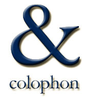

 About the Phoenix Project Website Host
The Phoenix Project operates as a study group of the Twin Cities Section of the Institute of Electrical and Electronics Engineers. The Phoenix site is hosted by the section.
Technologies
The site uses HTML and cascading style sheets.
Content, layout, typography, and navigation are based on ready-to-use software engineering templates from ReadySET.Tigris.org.
Typography
Titles are in set in , a serifed font. Body text is set in , a nonserifed font. For clients who do not have these fonts, the style sheets specify some standard alternatives.
Graphics

The Phoenix Project logo symbolizes the investigation of variation in blood pressure. It is a composite of three images:
The tracings are drawn along two different timescales.
- The interior of a human heart and some of the blood vessels,
- An abstract electrocardiogram (ECG) tracing in red, and
- An abstract week-long systolic blood pressure cycle in blue.
The heart-image is Microsoft clip-art. The abstract tracings were drawn, and the entire logo composed, by the Halberg Chronobiology Center.
Accessibility
The Phoenix Project wants this site to be usable by everyone and discourages browser-specific web design. We support the "Best Viewed with Any Browser" campaign at http://www.anybrowser.org/campaign/ and try to make this site compliant with the compaign's "Accessible Site Design" guidelines.
License
The author(s) provide this information as a public service, and agree to place any novel and useful inventions disclosed herein into the public domain. They are not aware that this material infringes on the patent, copyright, trademark or trade secret rights of others. However, there is a possibility that such infringement may exist without their knowledge. The user assumes all responsibility for determining if this information infringes on the intellectual property rights of others before applying it to products or services.
About this Page
This page (the colophon) is maintained by Christopher J. Adams. It was last updated on 31 May 2005.
Copyright (C) 2005 Christopher J. Adams
Copying and distribution of this page is permitted in any medium, provided this notice is preserved.